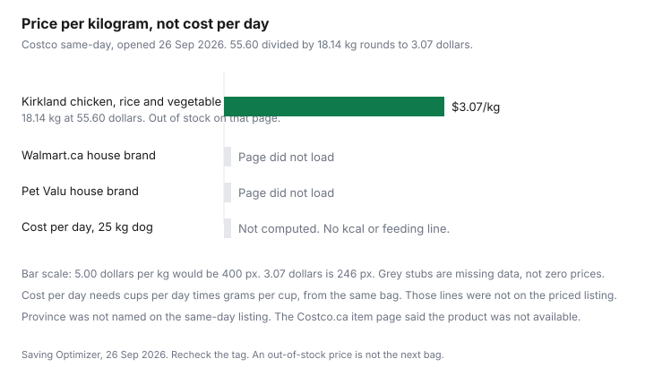

Pets · Canada
Store-Brand Pet Food in Canada: Kirkland, Walmart and Pet Valu House Brands on Cost per Day
A store-brand pet food is a label on a banner. It is not, by itself, a statement that the kibble was made in the same plant as the national brand on the next pallet. This page stays on the arithmetic a Canadian household can check: shelf price, kilograms on the bag, and, when the bag prints them, kilocalories and the cups for a stated body weight. Nutrition questions belong with your veterinarian. No quality ranking is offered here.
Disclosure: Amazon.ca storefront types are an offer type. Saving Optimizer may earn a commission if we later add a partner link. We do not currently claim an Amazon.ca partnership. A storefront does not change the price-per-kilogram arithmetic. Education only. This is not veterinary advice.
Key takeaways
- Costco same-day, opened 26 Sep 2026: Kirkland Signature Adult Formula Chicken, Rice and Vegetable, $55.60 for 18.14 kg. That is $3.07 per kilogram. The listing was out of stock and did not print kilocalories.
- The matching Costco.ca product page returned “Product not available.” Walmart.ca and Pet Valu product pages did not load, so those house-brand rows stay blank.
- Cost per day for a 25 kg dog needs a feeding line and a grams-per-cup figure from the same bag. Those lines were not on the page that had the $55.60 price, so no daily cost is printed.
- A medical diet your veterinarian prescribed is not a candidate for a banner swap. Maintenance food is a different decision, and it still needs your veterinarian’s okay.
- Recheck the tag before the next bag. A membership fee is a separate sum. The membership guide is where that fee is tested.
Who makes store brands, and what the label tells you
The useful question is not “who owns the logo.” It is “what does this bag actually declare.” On 26 Sep 2026 the pages that opened did not name a manufacturer for Kirkland Signature pet food, and Walmart.ca and Pet Valu did not return a product page at all. Repeating a forum guess about a co-packer would invent a plant. Leave the factory blank until a label or a retailer page prints it.
What a label can tell you, when you are in the aisle, is narrower and more useful. The net weight in kilograms. The calorie statement, often as kilocalories per kilogram and per cup. The feeding table, which is a starting amount for a stated weight, not a prescription. A nutritional adequacy statement, which says the food is complete for a life stage if the maker has put that sentence on the bag. Guaranteed analysis percentages for protein, fat, fibre, and moisture. None of those lines were on the Costco same-day listing that carried the $55.60 price. The same-day page did say fresh chicken is the number one ingredient, and it listed probiotics, omega fatty acids, and added glucosamine and chondroitin as features. Those are marketing lines from that listing. They are not a feeding trial, and they are not a reason to skip your veterinarian.
House brands people ask about in Canada include Kirkland Signature at Costco, whatever private label Walmart.ca is selling in the pet aisle that week, and Pet Valu’s own banners. This draft can attach a price only to the Kirkland bag below. The household store-brand guide makes the same point about paper towels: a banner name is not a factory name, and a unit price is not a quality score.
Cost per day compared across Canadian retailers (date-stamped)
Price per kilogram is shelf price divided by the kilograms printed on the bag. $55.60 divided by 18.14 kg is $3.065 per kilogram, which rounds to $3.07 per kilogram. That is the only pet-food unit price this build verified. Province was not printed on the same-day listing, so this row is “Costco same-day, Canada,” not a named warehouse. The listing was out of stock when opened. An out-of-stock price can still be the last tag the site showed. It is not a promise the next bag rings up at $55.60.
Cost per day is the next division, and it is blocked. You need the grams the dog will actually eat. The usual path is the feeding table (cups for a stated weight) times the grams in one cup of that kibble, divided by 1,000, times the price per kilogram. A 25 kg dog is the comparison weight in the question people ask. The opened Kirkland listing had no cups, no grams per cup, and no kilocalories, so a daily dollar for 25 kg would be an invented feeding amount. It is left blank. Third-party calorie figures that circulate online were not on Costco.ca or the same-day page, so they are not used.
Walmart.ca returned a bot-check page on a direct open, including for a Pure Balance 14 kg listing and a Purina Dog Chow 14 kg listing that search tools had indexed. Pet Valu returned a security check, including for a Performatrin Ultra page. Indexed prices and calorie lines from those blocked pages are not treated as shelf data. The rows stay empty until you photograph the tag. The method, once you have the tag, is the same one in the unit-price guide: divide, then write the unit on the note so a later bag of a different size does not inherit the old cents.
| Product and retailer | Price and weight | Price per kg | kcal on that page | Cost per day, 25 kg dog |
|---|---|---|---|---|
| Kirkland Signature Adult Formula Chicken, Rice and Vegetable, Costco same-day | $55.60 for 18.14 kg. Out of stock on that page. Province not named. Price checked 26 Sep 2026. | $3.07 | Not printed | Not computed |
| Same Kirkland bag on Costco.ca (item 100380650) | Page returned product not available. Container size 18.14 kg appeared in a leftover description. No price. | Not computed | Not printed | Not computed |
| Walmart.ca house brand | Product page did not load (bot check). | Not opened | Not opened | Not computed |
| Pet Valu house brand | Product page did not load (security check). | Not opened | Not opened | Not computed |
| A national brand on the same trip | No national-brand pet-food price loaded beside the Kirkland row. | Not opened | Not opened | Not computed |

Switching foods safely
A cheaper kilogram is wasted if the dog will not eat the new bag or the stool falls apart for a week. The safe switch is the one written on the new bag or the one your veterinarian writes for that pet. This build did not open a trial that authorizes a single timetable for every animal, so no “seven days for everyone” rule is printed here. Use the bag’s own steps. If the bag is silent, ask the clinic before you improvise.
Practical checks that do not require a slogan: keep enough of the current food to mix through the whole transition. Change one variable. A new protein, a new treat, and a new supplement in the same week makes it impossible to see which one caused the mess. Weigh the dog, or at least note the ribs and the waist, at the start and two weeks later. The feeding table is a start, not a target you must hit if the dog is gaining. Put the price per kilogram in the same note as the cups you actually poured, so the next bag is judged on the food the dog ate.
When not to switch (medical diets)
A maintenance formula and a veterinary diet are different products. If your veterinarian has prescribed a food for kidney disease, urinary stones, food allergy, or another condition, the logo on a cheaper maintenance bag is not a substitute. Confirm any change with that veterinarian. This page does not rank therapeutic brands and does not tell you to stop a prescribed diet.
Life stage matters in the same way. A puppy, a kitten, a pregnant animal, or a senior with a clinic plan may need a different complete food than the adult maintenance bag in the warehouse. The Kirkland listing that priced at $55.60 described an adult formula. It did not say it was a veterinary diet, and it did not print a calorie number you could use to match a prescribed intake. If the animal is healthy and your veterinarian is content with an adult maintenance food, then the comparison is the unit price plus the feeding line. If the animal is not in that category, the unit price is the wrong first question.
Buying in bulk and freshness
18.14 kg is a large bag. The saving per kilogram only lands if you feed the bag while it is still the food you meant to buy. Check the best-before date on the sack before you leave the warehouse. The same-day page did not print a best-before or a shelf-life claim, so this guide does not invent a number of months. If the date is close, a smaller bag at a higher price per kilogram can be the cheaper food you will actually use.
Storage is part of the price. Keep the bag sealed, dry, and off a hot floor. A garage in July and a damp basement are how a bulk buy turns into waste. If you split the bag into a smaller bin, label the bin with the best-before from the sack. Write the $3.07 per kilogram on that label too, so a later sale bag is compared with the food you still have, not with a memory. The Costco household guide makes the same point about paper goods: a bulk buy wins only when the household uses it.
Price tracking and sales cycles
Pet-food prices move, and a warehouse price is not a contract. On 26 Sep 2026 the same-day site showed $55.60 and out of stock, and the Costco.ca item page said the product was not available. Those two facts are the whole “cycle” this build could see. There is no verified calendar of pet-food sale weeks. The habit that works is a three-line note: date, price, kilograms. Divide before you put the bag in the cart. If the new price per kilogram is higher than the note, you are not “stocking up.” You are paying more.
Membership is not inside the $55.60. If you would not shop Costco without the dog food, the annual fee belongs in the decision. Do that math on the membership page, not by spreading a guessed fee across a guessed number of bags. An Amazon.ca storefront, if you use one later, is a place to buy. It does not change the division. Photograph the tag, including kilocalories and the cup weight if they are on the bag, and you will be able to fill the blank cost-per-day cell the next time.
Sources & date stamps
- Costco same-day listing for Kirkland Signature Adult Formula Chicken, Rice and Vegetable Dog Food, $55.60 for 18.14 kg, out of stock, no kilocalories. Opened 26 Sep 2026.
- Costco.ca item page for Kirkland Signature Chicken, Rice and Vegetables Adult Dog Food, 18.14 kg (item 100380650): product not available. Opened 26 Sep 2026. No price used from that page.
- Walmart.ca and Pet Valu product URLs returned a bot check or a security check. No house-brand price, weight, or kilocalorie figure from those banners is used.
- No manufacturer name was printed on the pages that opened. No feeding amount for a 25 kg dog was printed on the priced listing, so cost per day is not calculated.
Frequently asked questions
Are store-brand pet foods made by the same companies?
This page does not name a factory. No Costco.ca, Walmart.ca, or Pet Valu page opened on 26 Sep 2026 named the plant behind Kirkland Signature, a Walmart house brand, or a Pet Valu house brand. A private-label name on the bag is a banner, not proof that the kibble matches the national brand beside it. Read the ingredient list and the calorie line on the bag you are holding, and ask your veterinarian before you treat two logos as the same food.
How do I switch foods without upsetting my pet's stomach?
Follow the transition printed on the new bag, or the one your veterinarian gives you for that animal. This page did not open a feeding trial that sets a universal number of days. Keep the old food until the new bag is finished as a mix, watch stool and appetite, and stop and call your veterinarian if vomiting, refusal, or lethargy shows up. A lower price per kilogram is not a reason to finish the switch in one meal.
Is Kirkland pet food good value?
On the Costco same-day listing opened 26 Sep 2026, Kirkland Signature Adult Formula Chicken, Rice and Vegetable was $55.60 for 18.14 kg, which is $3.07 per kilogram when $55.60 divided by 18.14 is rounded to the cent. The same listing did not print kilocalories or a feeding amount, and it was marked out of stock. Value per day needs those missing lines. The price per kilogram is the figure this page can stand behind.
When shouldn't I switch to a store brand?
Do not leave a food your veterinarian prescribed for a medical condition because a maintenance bag is cheaper per kilogram. Kidney, allergy, urinary, and other therapeutic diets are a treatment plan. A store brand can still be the right maintenance food when your veterinarian has said a maintenance food is appropriate and you have compared a complete feeding line, not only the shelf price.
How often should I recheck prices?
Recheck when you are about to buy the next bag, and again when a listing shows out of stock or a different bag size. The Costco.ca product page for the 18.14 kg chicken, rice and vegetable bag returned product not available on 26 Sep 2026, while same-day still showed $55.60 and out of stock. Write the date, the kilograms, and the price in a note. Last month's $3.07 per kilogram is not a promise.